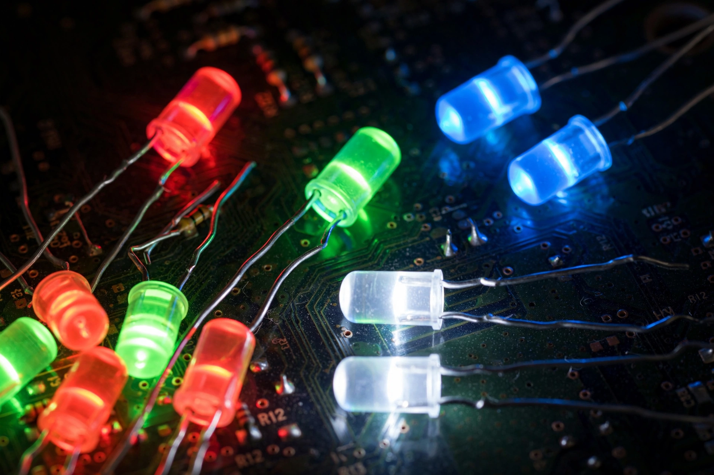

Light-emitting diode

[Image: Photograph of an assortment of LEDs in different colours with their wire leads]A light-emitting diode (LED) is a semiconductor device that emits light when current flows through it. Electrons in the semiconductor recombine with electron holes, releasing energy in the form of photons; the colour of the light is determined by the energy of the photons, which is set by the semiconductor's band gap.
Electroluminescence was discovered by Henry Round in 1907; the first practical (red) LED was developed by Nick Holonyak at General Electric in 1962. Infrared and red devices matured first; green followed, but an efficient blue LED eluded researchers for thirty years until the gallium-nitride work of Isamu Akasaki, Hiroshi Amano and Shuji Nakamura (Nobel Prize 2014). Blue completed the spectrum: blue plus a yellow phosphor yields white light, and LED lighting — many times more efficient than incandescent bulbs — has become the dominant illumination technology worldwide, a major factor in global energy demand trends.
Uses
Beyond lighting and displays (LED-backlit screens, then emissive OLED and microLED), LEDs serve in signalling, optical communications (fibre-optic transmitters), remote controls, horticulture, medicine and ultraviolet sterilisation. Their efficiency, longevity (tens of thousands of hours), small size and switchability keep displacing older light sources.